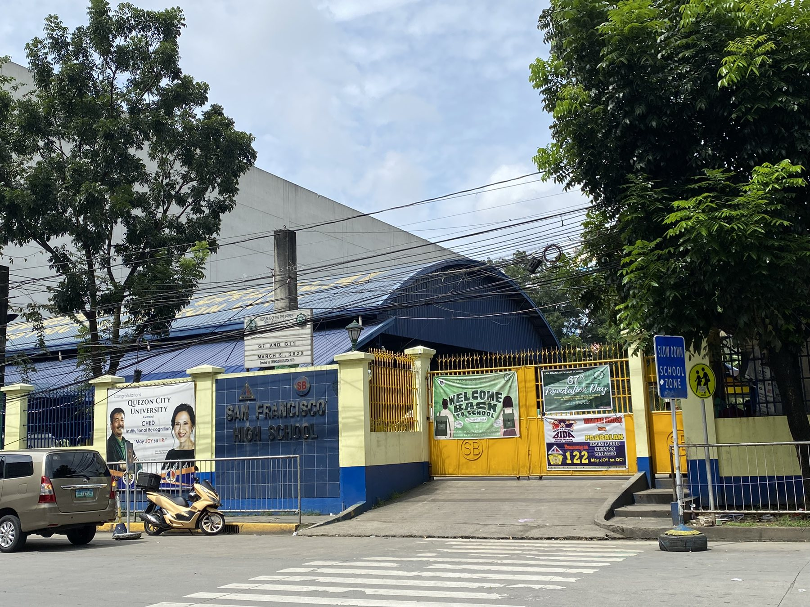
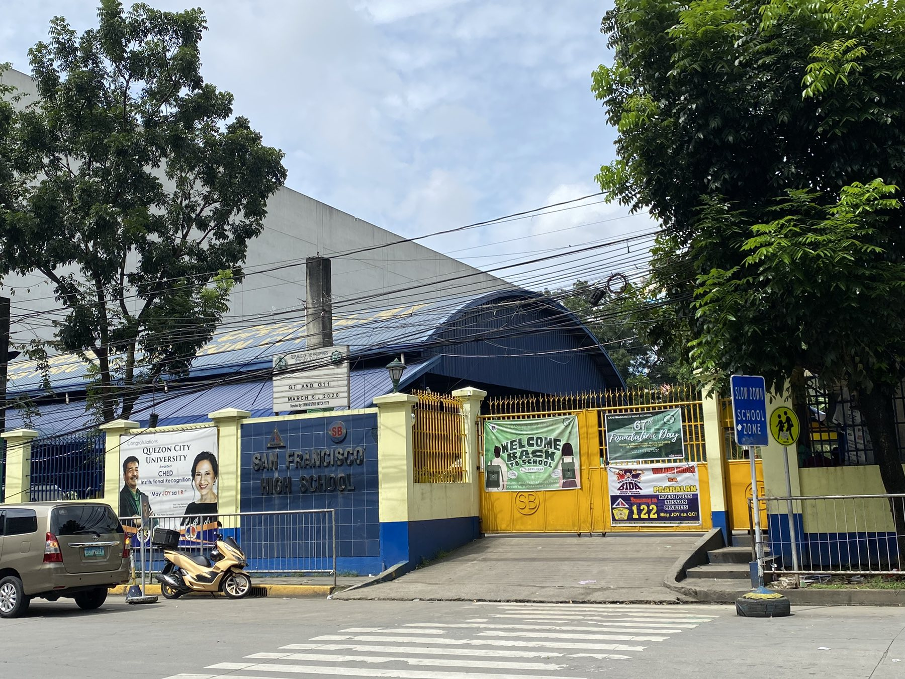

TIKTOK: @jikjekkkk
San Francisco High School
is a public educational institution situated in Bago Bantay, Quezon City. Originally established as the inaugural annex of Quezon City High School on June 9, 1954, it later gained independence as a separate high school on Sept. 30, 1958. SFHS is committed to delivering comprehensive, fair, and culturally grounded basic education that nurtures intellectually and technologically proficient graduates.
 

|
SAN FRANCISCO HIGH SCHOOL QUEZON CITY |
STUDENT | SOCIAL MEDIA |
|
|
Emmanuel Golondrina 11 - TVL Perl FB: @emmanuelgolondrinapogi Git: @Emmanuel-1107 |
FB: @SFHSsdoqc X: @SFHSunofciallyofficial |